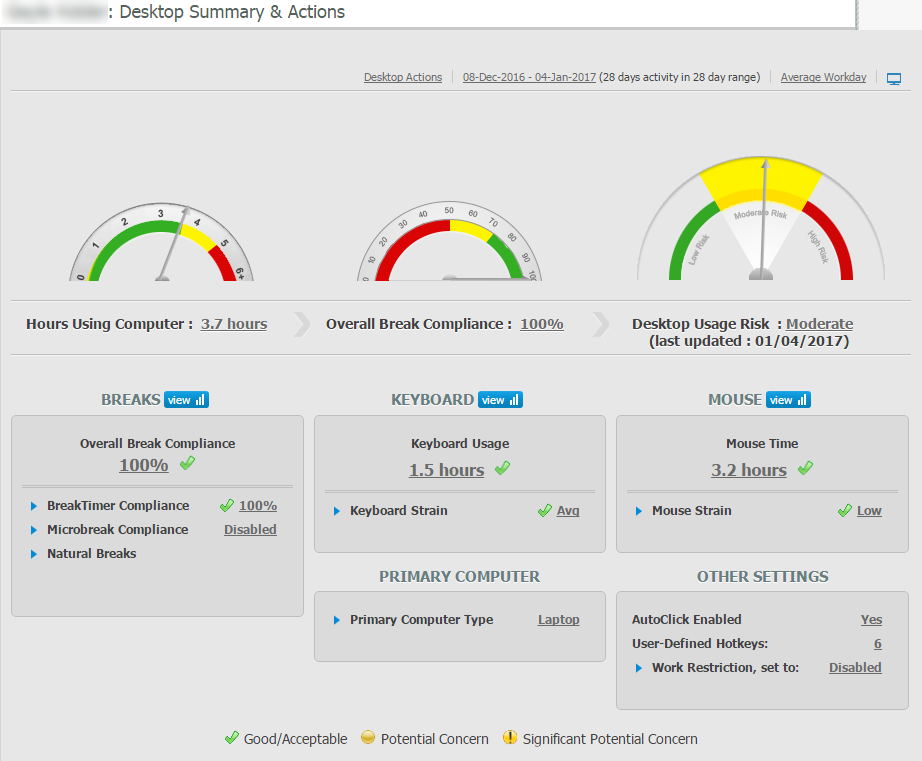
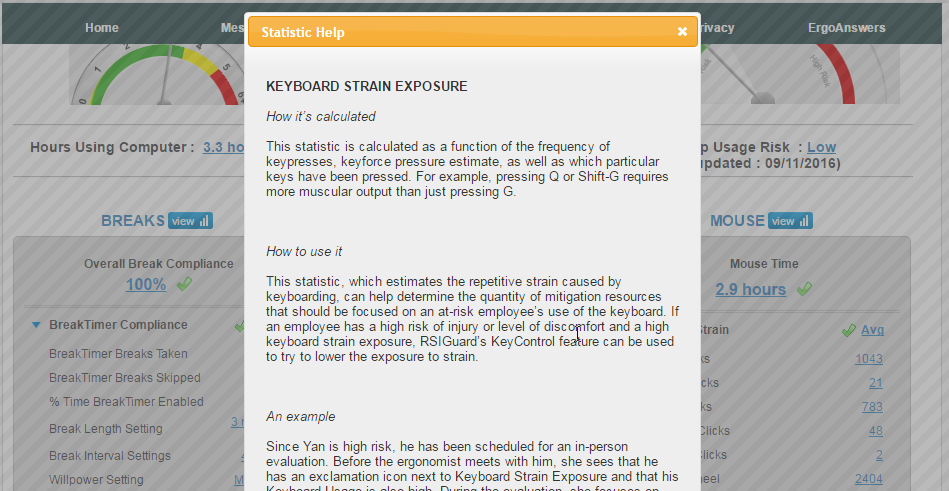
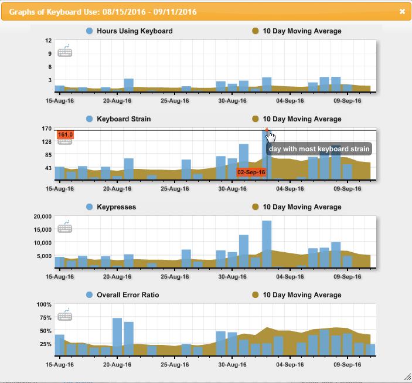
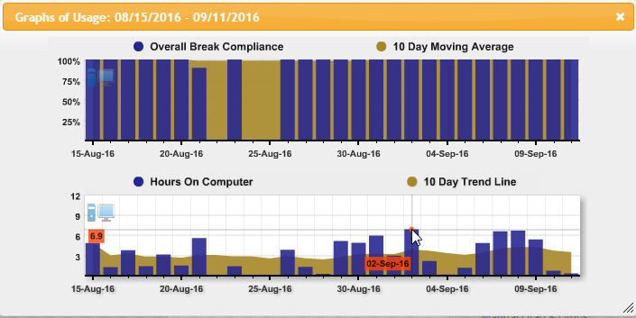
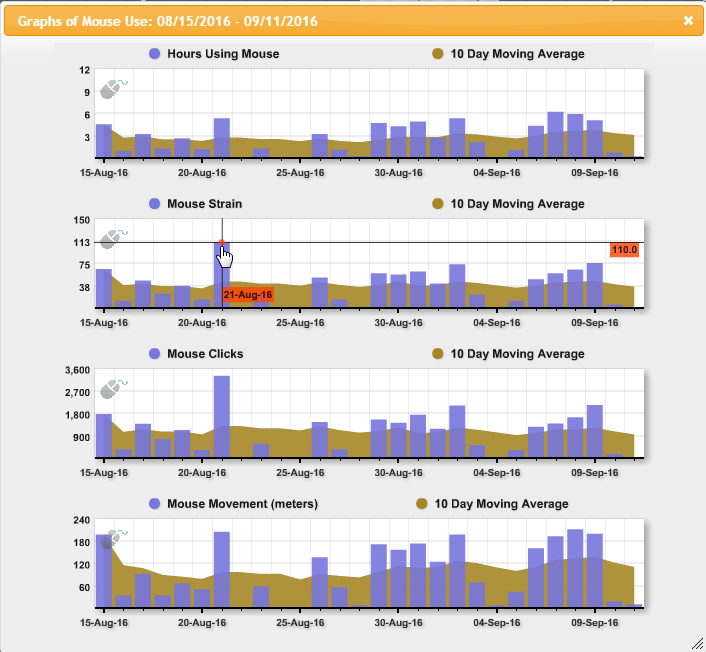

The Desktop Summary & Actions information from the Employee Summary contains user data for users who have installed RSIGuard. This is the same view the user sees on the Desktop Summary tab in their dashboard.
Various graphs show the user's break compliance, keyboard usage and mouse usage over a date range.

By default, the data is for an Average Workday over a selected date range, as indicated at the top.
Click on the date range to specify a custom date range over which to view the user's Desktop data.
For more details on any item, expand the section by clicking the blue arrow.

The Click the links to see an explanation of how the statistic is calculated and how it's used, along with examples.

For more information on how the statistics are calculated, see Appendix C .
Click the View icon to see detailed graphs.
The usage graphs accessed by clicking the View icon show statistical details for Breaks compliance, Keyboard usage or Mouse activity over time.
You can hover over any point in the graphs to view the statistics for that data point.

Break compliance statistics include:
Overall break compliance

Overall Break Compliance
This statistic indicates how well a user takes breaks from computer work, whether that time is self-initiated or initiated by the BreakTimer feature in RSIGuard. It considers the ratio of suggested breaks that were taken to the number suggested (if BreakTimer is enabled). It also considers any natural (self-initiated) breaks of at least 4 minutes, and gives more credit if the rest was taken when the user had built up 70% or more of the exposure level that would trigger a BreakTimer break.
Hours On Computer
This statistic is calculated by noting the amount of time between when a first keystroke or mouse activity occurs (following a period of "not using the computer"), and when 30 seconds have passed without keystrokes or mouse activity. During this time, RSIGuard considers the user to be "using the computer."
Keyboard usage statistics include:
Hours Using Keyboard
This statistic is calculated by noting the amount of time between when a first keystroke occurs (following a period of "not using the keyboard"), and when 30 seconds have passed without a single keystroke. During this time, RSIGuard considers the user to be "using the keyboard."
Keypresses
This statistic tells the raw number of keystrokes pressed without regard to which key is being pressed. For example, pressing Ctrl-A would add 2 keypresses to this statistic.
Overall Error Ratio
This statistic indicates a user's fatigue by showing the ratio of errors in typing to number of words typed. An increase in the ratio of errors to words-typed can be a proxy indicator for fatigue since fatigue can increase typing error rate.
Mouse usage statistics include:

Hours Using Mouse
This statistic is calculated by noting the time between when mouse activity (moves, clicks or wheel-spin) starts (following a period of "not using the mouse"), and when 30 seconds pass without mouse activity. During this time, RSIGuard considers this "time using the mouse".
Mouse Strain
Mouse Strain is calculated as a function of the types and frequency of mouse movement, duration of mouse button usage, number of clicks, drag & drops, and wheel scrolling.
Mouse Clicks
This statistic reports the raw number of mouse clicks performed by a user. It includes single, double, triple, right and middle clicks. It also includes clicks that are part of a drag and drop operation. It does not include AutoClick automatic clicks since these are not actually done by the user. Double and triple mouse clicks are counted as two and three clicks respectively.
Mouse Movement
Approximate distance (in meters) that the mouse is moved on the mousing surface.